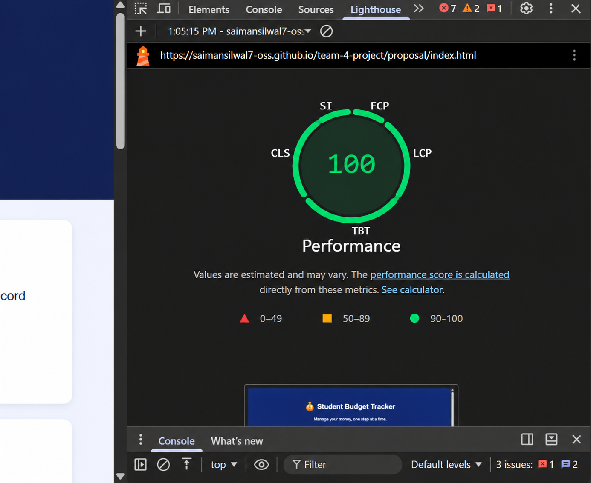
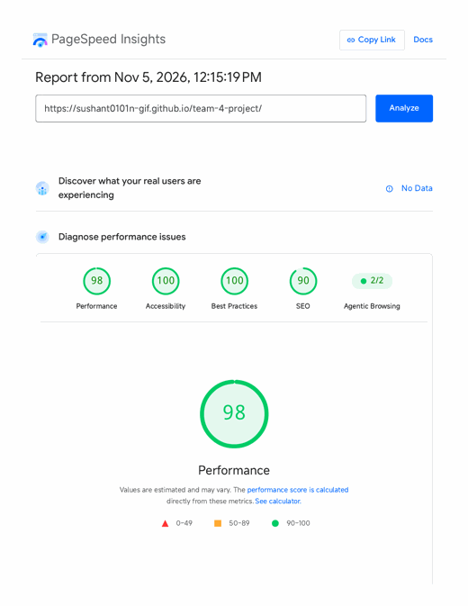
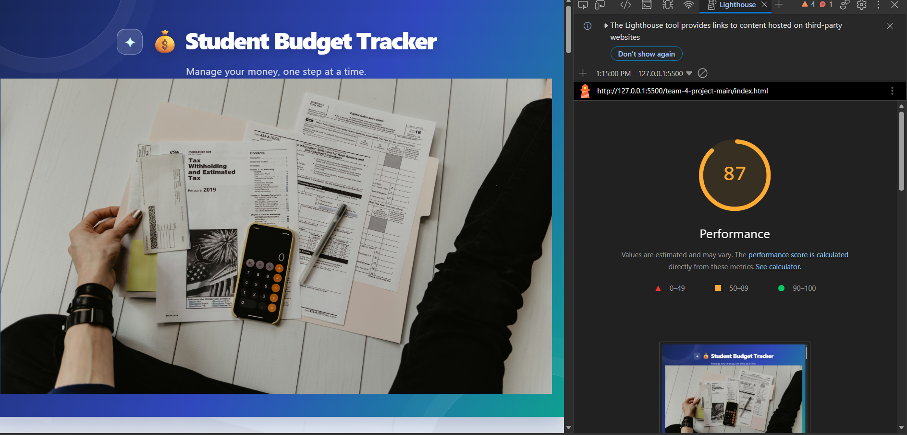

Web Programming · Week 9.2
Lighthouse Performance Audit
Team 4 — Student Budget Tracker
1. Goal and latest audit summary
The assignment target is a Lighthouse Performance score of at least 80/100 (bonus target: 90+). The latest PageSpeed Insights report for the Team 4 Student Budget Tracker recorded 98/100, exceeding both targets.
Audited URL: https://sushant0101n-gif.github.io/team-4-project/
Report generated: 5 November 2026, 12:15 PM (GMT+9). Test profile: emulated Moto G Power, slow 4G throttling, initial page load, Lighthouse 13.6.0.
The same report recorded Best Practices 100/100 and SEO 90/100. It showed no real-user field data, so these are Lighthouse lab results rather than field measurements.
Latest performance metrics
- First Contentful Paint: 0.8 s
- Largest Contentful Paint: 0.8 s
- Total Blocking Time: 0 ms
- Cumulative Layout Shift: 0
- Speed Index: 3.8 s
Current opportunities
- Render-blocking requests — estimated savings of 300 ms.
- Use efficient cache lifetimes — estimated savings of 5 KiB.
2. Before audit evidence
Screenshot A — saved before-audit score

Screenshot B — Lighthouse opportunities

- Image delivery opportunity: estimated savings about 1,748 KiB.
- Render-blocking requests: estimated delay about 230 ms.
- LCP request discovery and network dependency chain were also flagged.
These opportunities belong to the saved audit evidence. They identify potential savings; they do not prove that each item was a critical failure on the tracker page itself.
3. Five optimization changes prepared
Implementation status: I prepared the exact optimized source files in this Week 9.2 folder. These are individual assignment copies stored in this personal repository. They demonstrate the prepared optimizations without modifying the shared Team 4 repository.
1. Defer the application JavaScript
Allow the browser to finish parsing HTML before running the application script.
<script src="optimized-app.js" defer></script>
2. Remove the large remote CSS background image
The current stylesheet requests a large Unsplash background image. The prepared CSS uses a lightweight gradient instead, avoiding an extra external image request.
body { background: linear-gradient(135deg, #eff4ff, #e8faf6); }3. Remove expensive card backdrop blur
Removing the blur filter reduces extra rendering/compositing work on card surfaces while keeping the white card appearance.
/* Removed: backdrop-filter: blur(12px); */
4. Calculate totals in one pass
Replace two full-array filter/reduce chains with one loop that totals income and expenses together.
let income = 0, expenses = 0;
for (const transaction of transactions) {
const amount = Number(transaction.amount) || 0;
if (transaction.type === "income") income += amount;
else if (transaction.type === "expense") expenses += amount;
}5. Batch DOM updates and delegate delete clicks
Build transaction rows in a DocumentFragment, insert them together, and use one listener on the list instead of one listener per Delete button.
const fragment = document.createDocumentFragment();
// create each row and append it to fragment
list.replaceChildren(fragment);
list.addEventListener("click", event => {
const button = event.target.closest("button[data-index]");
if (!button) return;
// validate index, remove transaction, then save
});Ready-to-review files: optimized-index.html, optimized-app.js, optimized-style.css, and optimization-patches.md.
4. Accessibility improvement: skip to main content
The optimized page now includes a keyboard-accessible skip link before the header. Keyboard users can press Tab to reveal it and activate it to move directly to the main landmark.
<a class="skip-link" href="#main-content">Skip to main content</a> <main id="main-content" tabindex="-1"> ...page content... </main>
This is an additional accessibility improvement alongside the five performance optimizations. It does not replace the required fresh Lighthouse performance re-test.
5. After audit evidence
Screenshot C — saved after-audit score

The latest PageSpeed Insights PDF records 98/100 Performance for the Team 4 tracker, above the assignment target. The older saved before/after screenshots show different page URLs, so they are not a controlled comparison and do not prove that the five prepared changes caused a score increase. The optimized copies remain in this personal assignment folder and have not been merged into the shared team repository.
Screenshot D — temporary local check

5. Reflection
The most promising change for reducing initial page weight is removing the large remote background image, because it avoids downloading an additional image before the page can feel complete. Deferring JavaScript should also help avoid blocking HTML parsing. The JavaScript changes improve efficiency when transaction lists grow, while the visual CSS simplification can reduce rendering work.
The actual impact of each change must be confirmed by running Lighthouse again under the same conditions. The latest Team 4 tracker report shows 98/100. The historical screenshots show different URLs, so there is no honest basis to claim the prepared code changes caused a measured score increase.
6. Final verification checklist
- Saved before and after Lighthouse screenshots included.
- Five concrete optimization patches documented with code snippets.
- Skip-to-main-content link added to the optimized page and report.
- Latest Team 4 tracker score is 98/100, exceeding the target of 80.
- A same-URL re-test with the prepared optimized page and full metric breakdown is still required to demonstrate a measured performance improvement. No changes to the shared Team 4 repository are required for this individual assignment.